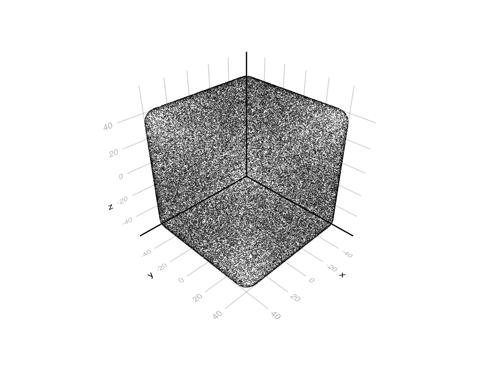

Calling Custom C++ library
An example of calling user libraries that can provide additional Geant4 functionally that is not provided by the set of wrapped classes. In this example we define a custom solid called RoundCube, which is a cube with rounded edges and vertices. The cube is defined by the side length a and the radius of the rounded edges and vertices r.
You can also download this example as a Jupyter notebook and a plain Julia source file.
Table of contents
- Loading the necessary Julia modules
- Building the custom library
- Define Julia functions to interact with the custom library
- Testing the custom library
Loading the necessary Julia modules
using Geant4
using Geant4.SystemOfUnits
using Libdl
using CairoMakie, Rotations, LinearAlgebra, IGLWrap_jll # to force loading G4Vis extensionBuilding the custom library
The custom library is defined in the C++ file UserLibrary.cpp. The library provides a function to create a custom solid RoundCube and some additional functions to interact with the solid.
The attribute Geant4_jll.artifact_dir provides the path to the Geant4 installation directory. We use only a sub-set of libraries needed to link shared library.
prefix = Geant4.Geant4_jll.artifact_dir
dlext = Libdl.dlext;
if Sys.KERNEL == :Linux
ldflags = "-Wl,-rpath,$prefix/lib -Wl,--no-as-needed"
else
ldflags = "-Wl,-rpath,$prefix/lib -Wl"
end
# Compilation of the custom library"-Wl,-rpath,/home/runner/.julia/artifacts/a29502682ae2904a6931c61f0fa34e562e6d6ed5/lib -Wl,--no-as-needed"The custom library is defined in the C++ file UserLibrary.cpp. Please note that the callable functions are defined with the extern "C" attribute to avoid name mangling.
Base.run(`c++ -O2 -shared -fPIC -std=c++17 -I$prefix/include/Geant4 $ldflags
-L$prefix/lib -lG4geometry -lG4materials -lG4global -lG4clhep
-o UserLibrary.$dlext $(@__DIR__)/UserLibrary.cpp`).exitcode == 0 || error("Compilation failed")trueDefine Julia functions to interact with the custom library
The @call macro provides a very convenient way to call C functions (or extern "C"). We define the following functions to interact with the custom library in a more Julia-friendly way:
const lib = "./UserLibrary.$(Libdl.dlext)"
createRoundCube(a,r) = @ccall lib.createRoundCube(a::Float64, r::Float64)::CxxPtr{G4VSolid}
deleteRoundCube(s::CxxPtr{G4VSolid}) = @ccall lib.deleteRoundCube(s::CxxPtr{G4VSolid})::Cvoid
infoRoundCube(s::CxxPtr{G4VSolid}) = (@ccall lib.infoRoundCube(s::CxxPtr{G4VSolid})::Cstring) |> unsafe_stringinfoRoundCube (generic function with 1 method)Testing the custom library
We create a RoundCube with side length 100 and radius 10 and draw the distance to the outside of the solid from a number of randomly distributed points in a random directions. This should get a nice image of the surface RoundCube. It is exercising Inside and DistanceToOut methods of the custom solid.
rcube = createRoundCube(10cm, 1cm) # returns a CxxPtr{G4VSolid}
img = drawDistanceToOut(rcube[], 100000) # implemented in G4Vis ext. It expects a G4VSolid.
Get the information about the RoundCube
info = infoRoundCube(rcube)
println(info)RoundCube with a = 100 r = 10
Delete the RoundCube
deleteRoundCube(rcube)This page was generated using Literate.jl.